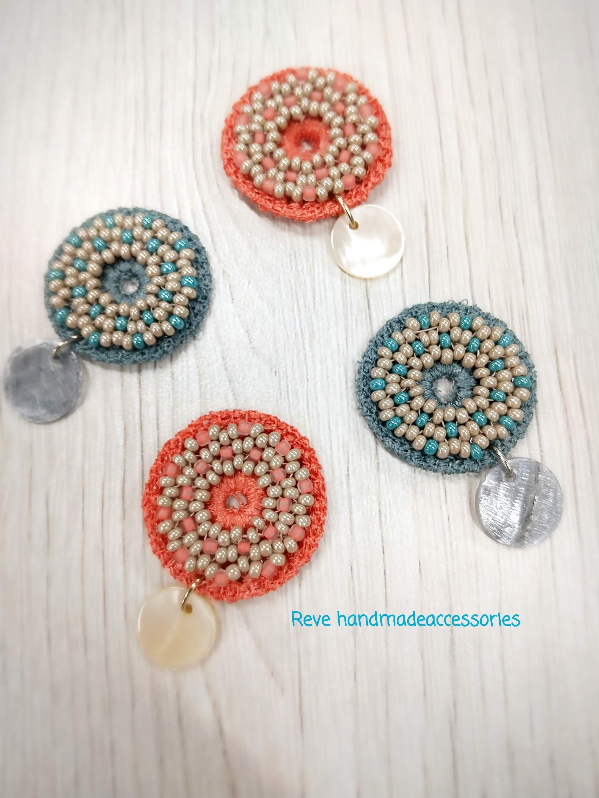
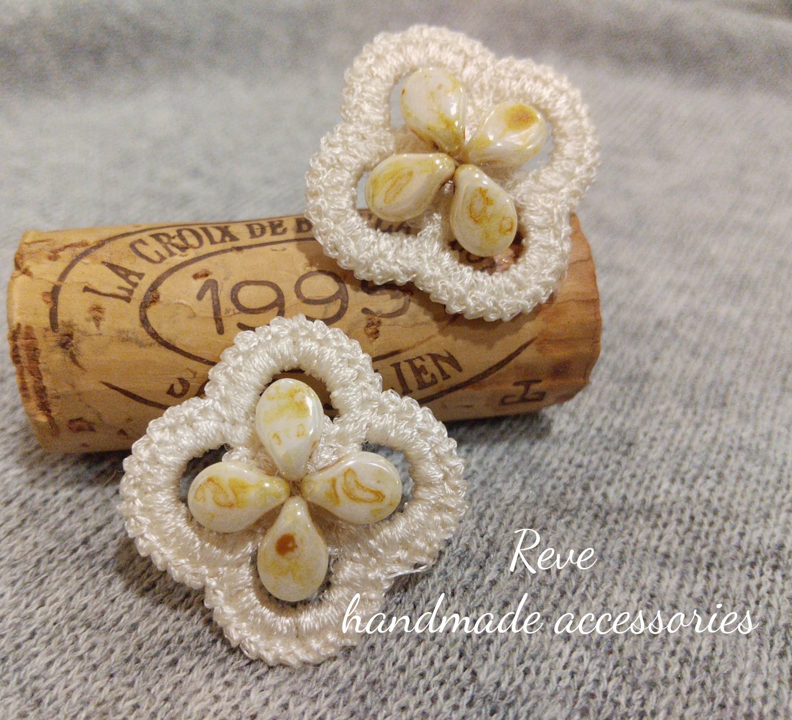
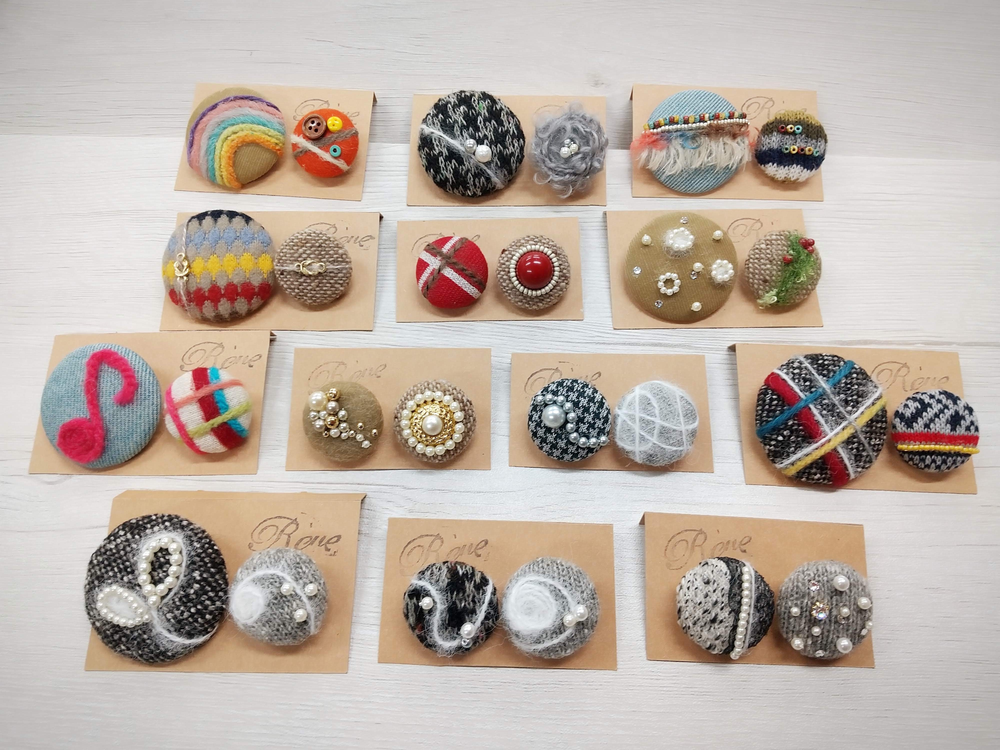
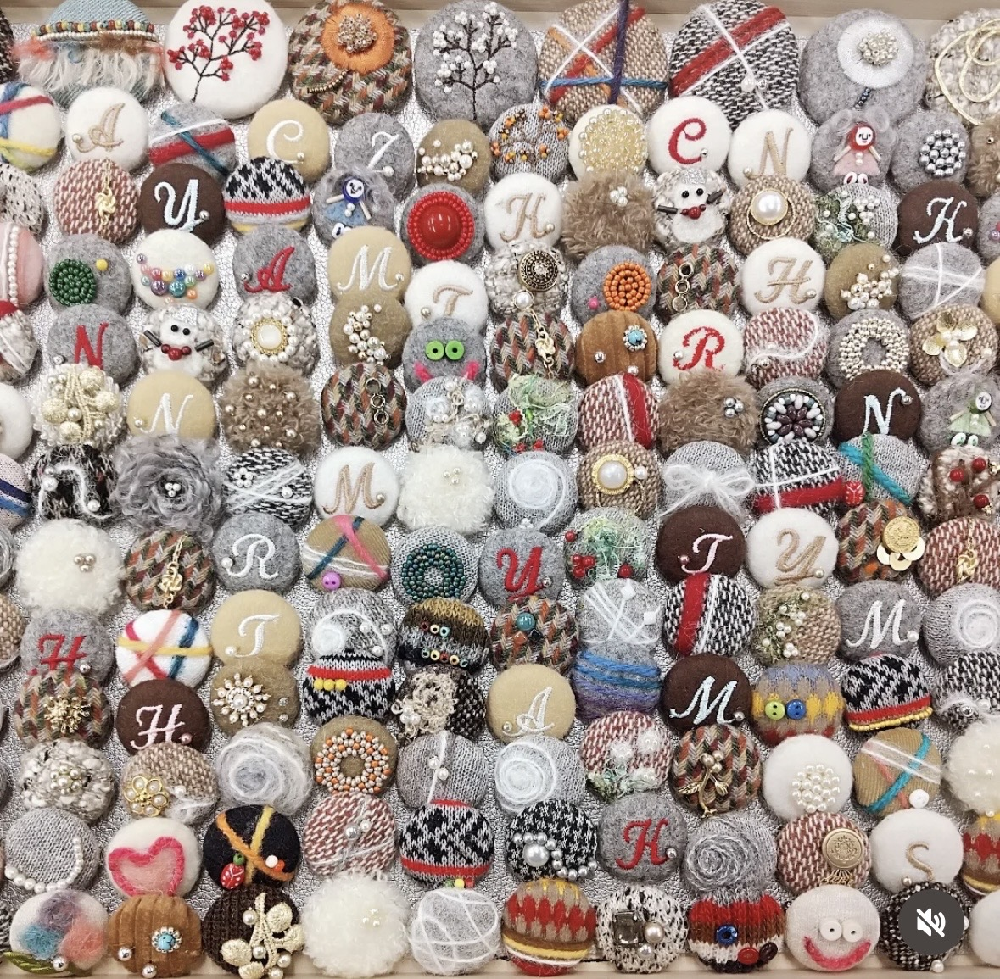

Accessories
ピアス、ネックレス、リングなど、日常に合わせやすいアイテムを紹介します。
Accessories


Embroidery
刺繍アクセサリー
ひと針ずつ重ねた糸の表情を、アクセサリーに閉じ込めました。
やわらかな色彩と立体感が、装いにあたたかな個性を添えます。
すべて一点ずつ、異なる表情をお楽しみください。




Fabric Buttons
くるみボタン
お気に入りの布をまとった、小さなくるみボタンです。
ヘアアクセサリーやブローチなど、暮らしのさまざまな場面で活躍します。
ひとつ加えるだけで、いつもの小物がぐっと華やぎます。


